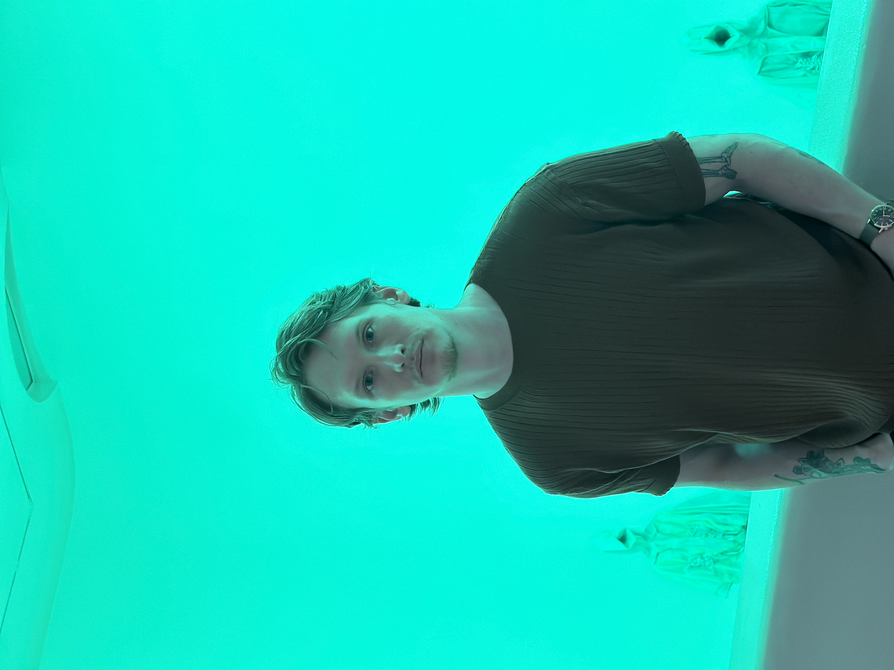

During my time at Metropolitan State University of Denver, I delved into studies encompassing biology, ecology, and fine art. Initially aiming to pursue further education in medicine after completing my undergraduate degree, I unexpectedly found myself immersed in a hospital setting upon graduation, where I discovered alternative vocational aspirations. While working in pathology, I realized my appreciation for the significance and intricacy of the medical realm, yet it failed to fulfill my personal criteria for success. My true passion lies in creativity, which has consistently provided me with the greatest sense of fulfillment.
